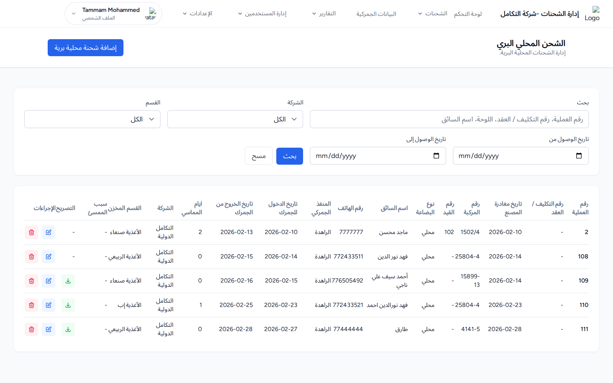
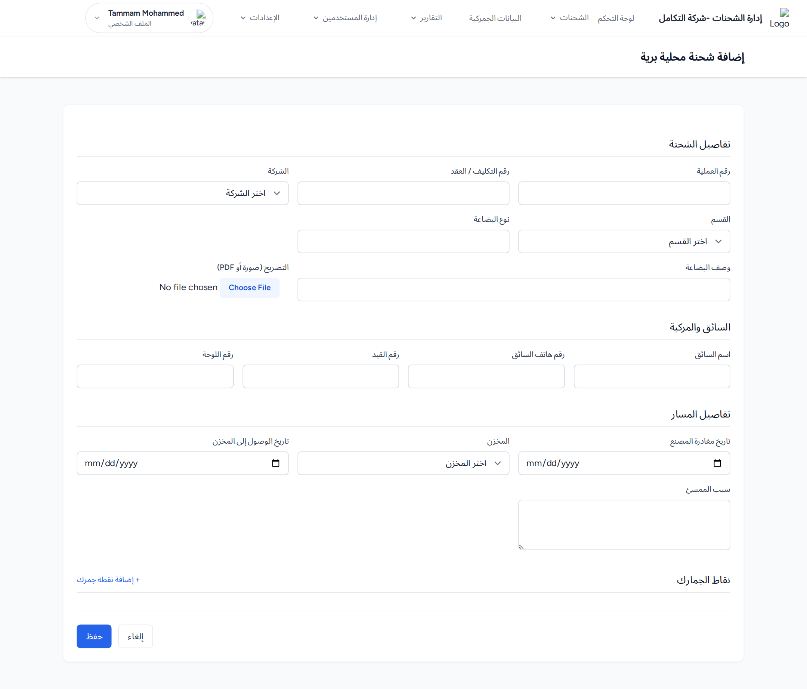

إدارة مركبات التخليص المحلي وتصاريحها ونقاط الجمارك. الوصول: قائمة «الشحنات ← الشحن المحلي البري».
البحث في رقم العملية ورقم التكليف/العقد وسبب المماسي واسم السائق، مع فلاتر الشركة والقسم والتاريخ. يعرض الجدول بيانات المركبة والسائق ونقاط الجمارك وأيام المماسي والتصريح.

اضغط إضافة شحنة محلية برية. النموذج من أربعة أقسام:
رقم العملية *، رقم التكليف/العقد، الشركة *، القسم، نوع البضاعة، وصف البضاعة، ورفع التصريح (PDF أو صورة بحد 10م.ب).
اسم السائق، رقم هاتف السائق، رقم القيد، رقم اللوحة.
تاريخ مغادرة المصنع، المخزن، تاريخ الوصول إلى المخزن، سبب المماسي.
قسم متعدد؛ لكل نقطة: الجمرك *، تاريخ ووقت الدخول، تاريخ ووقت الخروج. اضغط + إضافة نقطة جمرك لإضافة نقطة. ثم اضغط حفظ.
